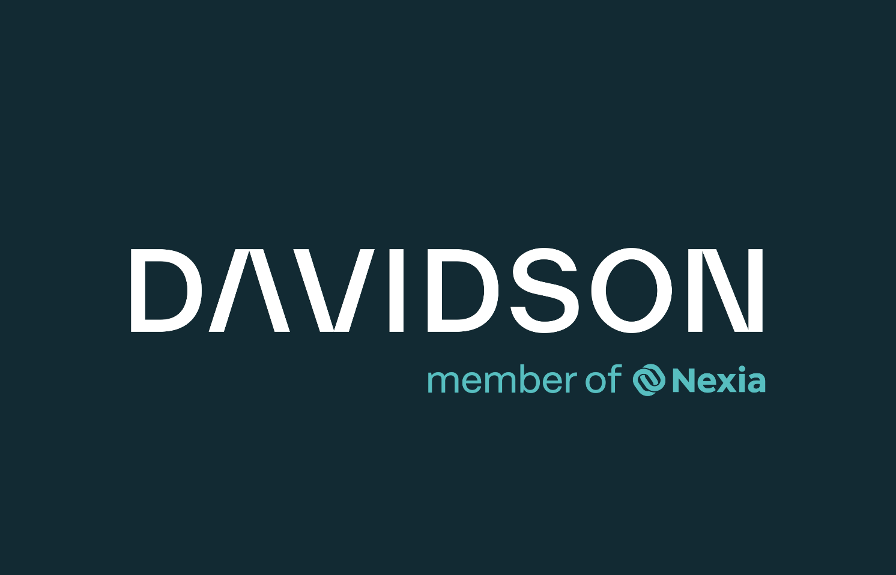

Davidson & Company LLP
Davidson helps people navigate complexity with confidence through trusted accounting, audit, tax, and advisory services. As a Brand Designer, I help shape how our brand comes to life across digital and physical experiences.
My work focuses on creating clear, user-focused experiences that strengthen our brand, connect with our audiences, and make every interaction feel intuitive and engaging.